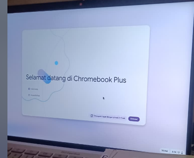

Selama menggunakan Chromebook dengan sistem operasi ChromeOS, saya merasakan pengalaman yang berbeda dibandingkan saat memakai sistem operasi lain. Sejak pertama kali menyalakan perangkat, semuanya terasa sederhana dan tidak rumit. Tidak ada proses pengaturan yang membingungkan. Sistem langsung siap digunakan dalam waktu yang sangat singkat, sehingga saya bisa langsung fokus pada pekerjaan tanpa harus melakukan banyak konfigurasi.
Chromebook yang saya gunakan memang dirancang untuk aktivitas berbasis internet dan layanan cloud. Karena itu, hampir semua kebutuhan seperti mengetik dokumen, mengakses email, hingga menyimpan file bisa dilakukan secara online. Proses booting yang cepat menjadi salah satu hal yang paling saya rasakan manfaatnya, terutama ketika harus bekerja dengan waktu terbatas. Saya tidak perlu menunggu lama seperti pada beberapa perangkat lain yang memerlukan proses loading cukup panjang.
Hal yang paling membantu menurut saya adalah kemudahan saat masuk menggunakan akun Google. Begitu login, seluruh data dan pengaturan langsung tersinkronisasi otomatis. File di Google Drive, riwayat pencarian, hingga ekstensi browser kembali seperti semula tanpa perlu dipasang ulang. Pengalaman ini sangat memudahkan ketika saya berganti perangkat, karena tidak perlu melakukan penyesuaian dari awal.
Dari segi tampilan, ChromeOS terlihat sederhana dan tidak berlebihan. Menu dan ikon disusun secara rapi serta mudah ditemukan. Notifikasi juga muncul dengan jelas tanpa terasa mengganggu. Karena tampilannya mirip dengan browser Chrome yang sudah familiar, saya tidak memerlukan waktu lama untuk beradaptasi. Semuanya terasa langsung bisa dipahami secara alami.
Jika dilihat dari prinsip kemudahan penggunaan, sistem ini memberikan informasi yang jelas tentang kondisi perangkat, seperti status baterai dan koneksi internet. Ketika ada pembaruan sistem, pemberitahuan muncul dengan bahasa yang mudah dimengerti. Selain itu, desain yang konsisten membuat saya tidak merasa kebingungan saat berpindah dari satu fitur ke fitur lainnya.
Dari pengalaman tersebut, saya menyimpulkan bahwa produk yang baik bukanlah yang memiliki fitur paling banyak atau terlihat paling canggih, tetapi yang mampu menjawab kebutuhan pengguna secara tepat. ChromeOS tidak mencoba menghadirkan terlalu banyak fungsi teknis yang rumit. Sebaliknya, sistem ini fokus pada hal-hal yang benar-benar sering digunakan sehari-hari, sehingga terasa praktis dan efisien.
Human-Centered Design (HCD) menurut saya bukan sekadar teori desain, tetapi cara berpikir dalam mengembangkan teknologi dengan benar-benar memahami kebutuhan manusia sebagai pengguna utama. Saat ini perkembangan teknologi seperti Artificial Intelligence (AI), Big Data, dan Internet of Things (IoT) berlangsung sangat cepat. Justru karena semakin canggih, pendekatan yang berpusat pada manusia menjadi semakin penting agar teknologi tersebut tidak terasa rumit atau menjauh dari penggunanya.
Pada dasarnya, teknologi diciptakan untuk membantu manusia. Jika pengembang hanya fokus pada kecanggihan sistem tanpa memikirkan bagaimana orang akan menggunakannya, maka hasilnya bisa jadi membingungkan. Banyak sistem yang sebenarnya kuat secara teknis, tetapi sulit dipahami oleh pengguna biasa karena kurang mempertimbangkan aspek kenyamanan dan kemudahan penggunaan.
Tanpa pendekatan HCD, risiko yang mungkin muncul cukup besar. Pengguna bisa merasa kesulitan, melakukan kesalahan saat mengoperasikan sistem, bahkan kehilangan kepercayaan terhadap teknologi tersebut. Dalam pengembangan AI misalnya, penting bagi sistem untuk memberikan penjelasan yang jelas tentang bagaimana suatu keputusan dihasilkan. Jika tidak transparan, pengguna bisa merasa ragu dan tidak yakin terhadap hasil yang diberikan.
Hal yang sama juga berlaku pada pengolahan Big Data. Data dalam jumlah besar tidak akan berarti jika tidak disajikan dalam bentuk yang mudah dimengerti. Visualisasi yang sederhana dan informatif jauh lebih membantu dibandingkan tampilan angka-angka kompleks tanpa penjelasan. Pada perangkat IoT, kemudahan kontrol juga menjadi kunci agar pengguna tidak kewalahan dengan banyaknya informasi dari berbagai perangkat yang saling terhubung.
Bagi saya, HCD berperan dalam membuat teknologi terasa lebih manusiawi. Desain yang inklusif dan sederhana memungkinkan lebih banyak orang untuk mengakses dan memanfaatkannya tanpa harus memiliki kemampuan teknis yang tinggi. Selain itu, pendekatan ini juga dapat mengurangi stres pengguna karena sistem dirancang sesuai pola pikir dan kebiasaan manusia.
Pengalaman saya menggunakan ChromeOS menjadi contoh nyata bahwa desain yang sederhana dan konsisten dapat memberikan kenyamanan dalam penggunaan sehari-hari. Ke depannya, saya melihat bahwa Human-Centered Design akan menjadi semakin penting agar perkembangan teknologi tetap relevan, mudah digunakan, dan benar-benar memberikan manfaat bagi kehidupan manusia.
Pengalaman saya menggunakan ChromeOS menunjukkan bahwa desain yang sederhana, konsisten, dan intuitif mampu memberikan pengalaman pengguna yang sangat positif. Sistem ini membuktikan bahwa teknologi yang baik bukanlah yang paling kompleks, melainkan yang paling efektif dalam memenuhi kebutuhan manusia.
Di masa depan, peran Human-Centered Design akan semakin krusial dalam pengembangan AI, Big Data, IoT, dan sistem cerdas lainnya. Dengan menempatkan manusia sebagai pusat desain, teknologi dapat benar-benar menjadi alat yang meningkatkan kualitas hidup, bukan justru menambah kompleksitas.
Pendekatan ini memastikan bahwa kemajuan teknologi tetap selaras dengan kebutuhan, kemampuan, dan nilai-nilai manusia.